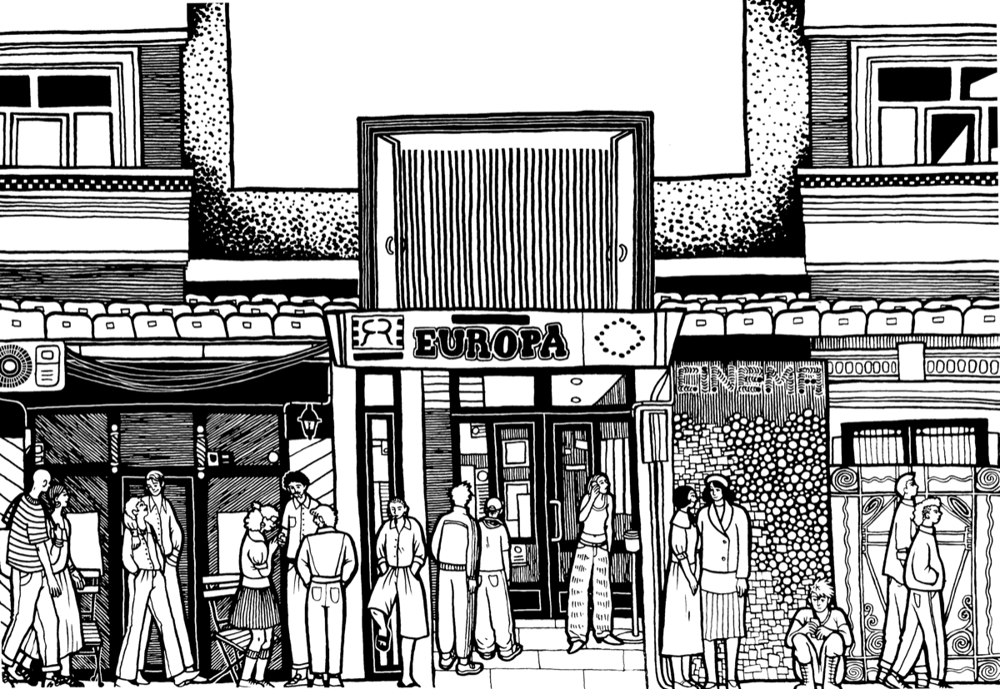
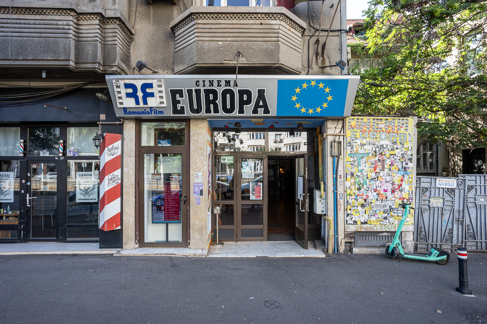
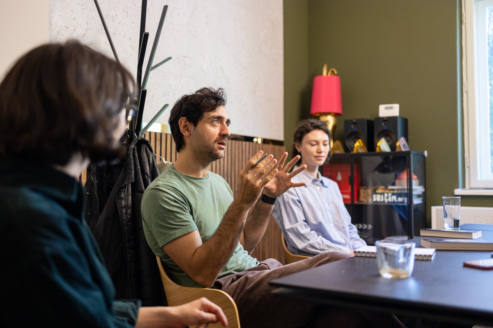
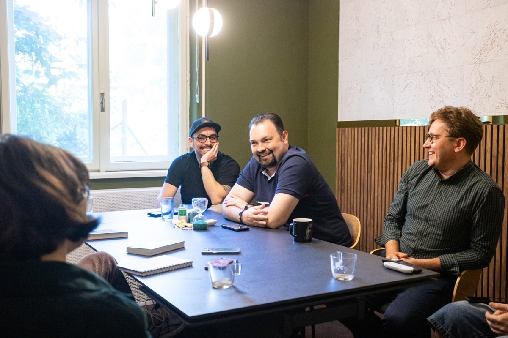
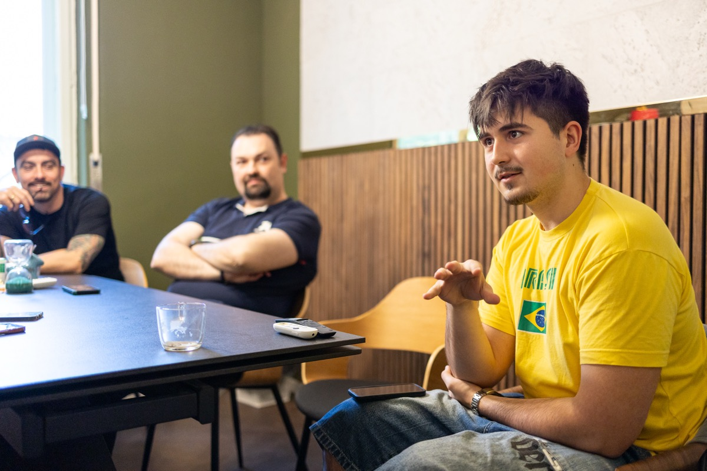
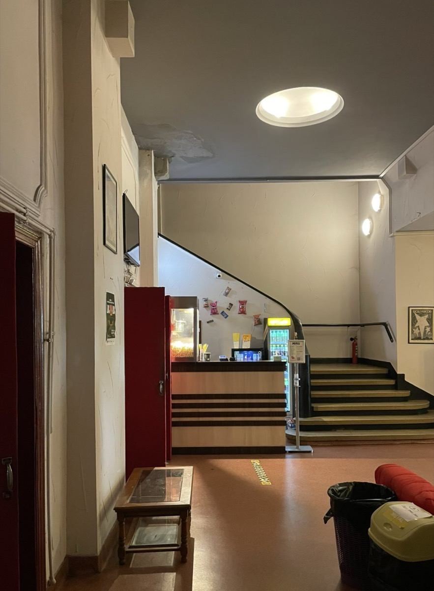
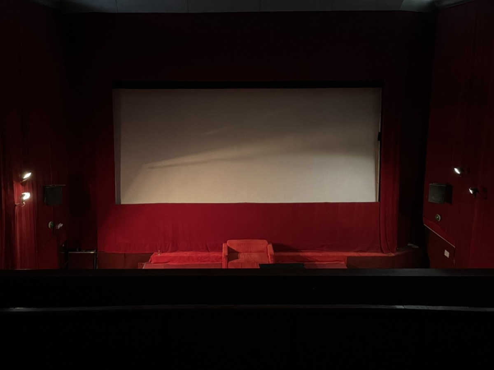

Dacă te plimbi pe Calea Moșilor, înspre bulevardul Carol, este ușor să treci fără să-ți dai seama prin fața cinematografului Europa. Intrarea modestă a cinematografului de pe Moșilor 127 se camuflează printre magazinele care apar și dispar în jurul său. Rândul de clădiri din care face parte este ultimul din partea veche a Căii Moșilor și lasă loc zonei de blocuri construite în ultimele decenii ale regimului comunist. Cunoscută în trecut drept Podul Târgului din Afară, strada lega zona Curții Domnești de Târgul Moșilor, aflat în direcția actualei zone Obor. Caracterul zonei a fost dat multă vreme de case negustorești, prăvălii la parter, hanuri, biserici și ateliere care datează din secolul al XIX-lea. După cutremurul din 1977, însă, porțiunea dinspre Obor a fost puternic transformată prin demolări, lărgirea străzii și construirea de blocuri. Pe această arteră funcționează, din 1935, fostul Cinema Miorița, care din 1999 și-a schimbat numele în Europa. Clădirea fost gândită ca un cinematograf de cartier, cu o singură sală de proiecție, integrat în rețeaua de peste 60 de săli de cinema care împânzea Bucureștiul interbelic.
După Revoluție, rețeaua naționalizată de cinematografe din care făcea parte și cinema Europa este trecută sub administrarea RADEF (RomâniaFilm). Lipsa de fonduri pentru modernizare lasă însă sălile vulnerabile în lupta cu noile tehnologii care iau cu asalt piața liberă. La scurtă vreme, peste trei sferturi din cele 400 de cinematografe din țară se închid. Primele salve sunt trase de casetele VHS, care încă de dinainte de Revoluție ofereau o alternativă clandestină sălilor de cinema și televiziunii. Apariția DVD-urilor și, mai ales, a mall-urilor lasă rezistența într-un con de umbră.
Dacă cinema Europa supraviețuiește acestei perioade, este doar datorită finanțării RADEF. În pofida faptului că în jurul anului 2010 trece printr-o serie de renovări, rata de ocupare a sălii rămâne neglijabilă, ceea ce face ca în 2024 clădirea să fie scoasă la închiriere. Atunci este preluată de cei de la susțin.org, care în doi ani reușesc să schimbe destinul vechiului cinematograf. Dacă timp de ani de zile sala nu mai văzuse mai mult de câțiva spectatori per proiecție, acum media a urcat la 150 și a strâns în jurul său o comunitate de peste 40.000 de oameni în online. Am mers să discutăm cu cei de la susțin.org la sediul lor, să aflăm cum a luat naștere această transformare și cum văd ei viitorul cinematografului Europa.
Ne întâlnim cu Costin, Andrei și Mihai la sediul organizației susțin.org într-o dimineață de sâmbătă și îi rugăm să ne povestească cum au ajuns să preia cinematograful Europa. Costin ne spune că totul a pornit de la un impuls de moment. Sunt pasionați de film și de mult își doreau să facă ceva în zona asta. Când au aflat că cinematograful Europa e scos la închiriere și că riscă să se închidă dacă nu-l ia nimeni, a părut ocazia perfectă. Starea în care au găsit clădirea lăsa însă mult de dorit. După o perioadă epuizantă de renovări menite să asigure strictul necesar pentru funcționare, Costin ne spune că aveau mare nevoie de un semn încurajator. Acesta a venit la evenimentul de deschidere, un maraton tematic de Halloween: „la finalul proiecției The Shining, când toată sala a aplaudat, ne-am zis: «wow, this could really work!»”.
Provocarea care li se deschidea în față era totuși una foarte mare: cum convingi un public obișnuit cu condițiile unei săli hipermoderne de mall să vină într-un cinematograf vechi, cu dotări perimate? Aveau nevoie să găsească o cale să se diferențieze și să ofere publicului un motiv bun să vină aici și nu în altă parte. Ăsta a fost punctul în care a intervenit experiența lor de publicitari, ne explică Costin.
Au început cu o selecție de filme axată pe old school blockbusters, pe care publicul nu le putea vedea prea des în altă parte. Pornind de la ideea asta, programul a început să se organizeze în jurul unor weekenduri și săptămâni tematice. Au urmat proiecții maraton, selecții horror, weekenduri Tarantino, Fashion Week, proiecții de filme clasice și alte serii construite în jurul unor teme clare. Abordarea este în mare parte una experimentală: „Dăm ce a funcționat, ce credem că o să funcționeze și tot testăm lucruri noi. E un mix”, ne spune Andrei. Un alt factor important, ne spune Costin, este decizia de a proiecta filmele o singură dată, ceea ce contribuie la senzația că fiecare proiecție este un eveniment unic.
Dar poate că ceea ce a contribuit cel mai mult la conturarea unei personalității proprii a cinematografului a fost decizia de a lăsa publicul să participe activ la crearea programului. Oamenii au posibilitatea să voteze pe Instagram sau prin mail filmele pe care vor să le introducă în program și chiar să vină cu propriile propuneri. Iar asta nu doar că a dus la crearea unei comunități online active și implicate, dar a și creat o relație aparte, mai personală, cu sala de cinematograf.
Un alt experiment care a avut succes au fost serile eveniment. Andrei ne povestește că la unul dintre ele, care omagia perioada VHS-urilor dublate și circulate pe sub mână din perioada comunistă, au invitat-o pe Irina Margareta Nistor să dubleze live toate cele 101 de minute ale filmului Missing in Action cu Chuck Norris. „A fost un deliciu seara aia”, ne spune Mihai.
Alt eveniment memorabil a fost proiecția filmului Filantropica, cu Nae Caranfil invitat, când au chemat lăutari și au împărțit mici și bere publicului. Mihai ne povestește șocul pe care l-au trăit atunci când, la finalul proiecției, Nae Caranfil i-a rugat pe spectatori să ridice mâna dacă era prima oară când vedeau filmul, și aproape toată sala a ridicat mâna. A fost, ne spune acesta, un moment puternic de realizare atât a schimbului între generații, cât și a faptului că filmele pe care ei le considerau a fi clasice sunt, de multe ori, complet noi pentru noua generație.
Renovarea cinematografului Europa este un proiect pe termen lung, care avansează în funcție de ordinea dictată de resurse și de urgența reparațiilor. Când au primit spațiul, prima pe listă a fost sonorizarea: „Sistemul audio, care funcționa tragic când am preluat noi spațiul, a fost primul lucru la care a trebuit să intervenim”, povestește Costin, care își amintește că a trebuit să scotocească prin măruntaiele unor forumuri vechi și obscure ca să găsească o soluție și să-i dea de cap. Rezolvarea este însă temporară, iar cei de la susțin.org își propun ca în viitor să-l înlocuiască cu totul.
A urmat problema infiltrațiilor de apă: „Când ploua mai tare, picura apă în sală și chiar în cabina de proiecție, trebuia să o prindem în găleți”, își amintește amuzat Costin. După ce i-au dat de cap, au trecut la scaunele vechi, care se strică constant. Aici intervine efortul neobosit al unuia dintre voluntarii care ajută la reparații, de regulă mult după program. „Dacă la 11 noaptea primesc notificare pe telefon că se dezarmează alarma la cinema, știu că e Martin care a venit să repare un scaun”.
Pe lângă reparațiile punctuale și strict necesare, există și un plan mai amplu de modernizare pentru sală, gândit în colaborare cu cei de la 108 Architects. Scopul este să ridice locul la standarde tehnologice actuale, fără să schimbe însă stilul actual de cinema old school: „vrem să păstrăm convenția de cinema old school, dar să oferim condiții mult mai bune”, ne spune Andrei.
Unul dintre aspectele remarcabile ale reinventării cinematografului Europa îl constituie comunitatea de voluntari care s-a creat în jurul său. Inițial, ideea de a implica voluntari a pornit din zona filmului, unde studenții interesați de industrie au posibilitatea de a lucra pe platou ca să dobândească experiență. Costin ne povestește că de la cei 2-3 voluntari cu care au început, s-a format o rețea neașteptat de amplă: „Sunt 100 de voluntari activi și 200 de voluntari pe platformă, cu 9 coordonatori, majoritatea studenți, dar și mulți liceeni”.
Munca lor acoperă aproape toate aspectele care țin de funcționarea unui cinema. Scanează bilete, vând popcorn, curăță sala, ajută la proiecții, închid spațiul sau fac postări pe pagina de Instagram a sălii. Sistemul este organizat pe ture. Voluntarii își trimit disponibilitatea, iar programul se face cu aproximativ o săptămână înainte. În zilele mai lungi, activitatea se împarte în două sau trei ture. Coordonatorii au rolul de a ține fiecare eveniment în picioare: verifică echipa, urmăresc fluxul de intrare, rezolvă problemele și se asigură că proiecția se desfășoară corespunzător. „Un coordonator e un soi de manager de eveniment”, explică Mihai. O dată pe lună, echipa organizează un pizza party pentru voluntari. „Își aleg filmul și luăm pizza. Este un eveniment doar al lor, cu film, popcorn și timp petrecut împreună”, ne spune Costin.
Succesul pe care l-a avut cinemaul în a atrage un număr așa de mare de voluntari se datorează în parte și faptului că funcționează ca spațiu social. David, care este voluntar la cinema Europa de aproximativ un an și a prins transformarea locului din interior, își amintește cum l-a ajutat această experiență să se integreze în viața din București. Ne povestește că după ce a venit din Târgu Mureș pentru facultate, nu avea nicio cunoștință în București: „nu știam pe nimeni. Cinema-ul a apărut pentru mine în viață chiar când aveam nevoie mai mult. M-a ajutat să fac multe conexiuni și să descopăr Bucureștiul”. Dincolo de interesul pentru film, David crede că ceea ce-i atrage pe voluntari este sentimentul de apartenență: „Pe lângă munca pe care o facem noi, ne simțim foarte bine acolo. E un spațiu în care toată lumea se simte inclusă și bine.”
Modul în care Cinema Europa a reușit să se reinventeze pare să țină de tot ceea ce oferă pe lângă film. În jurul proiecțiilor s-a format o comunitate de voluntari și un public care contribuie activ la programul cinematografului, vine la seri tematice sau participă la discuțiile de după proiecții. Chiar și așa, proiectul este la început și încă fragil. Licențele pentru filme sunt greu de obținut și costisitoare, clădirea are încă nevoie de intervenții majore, iar nici măcar o medie de 150 de locuri per proiecție nu poate susține toate cheltuielile unui cinema funcțional. Fiecare proiecție reușită se sprijină pe o muncă constantă de organizare, reparații, programare, comunicare și soluții găsite din mers. „În lipsa unei finanțări externe, succesul acestui proiect stă încă foarte mult în disponibilitatea constantă la efort”, ne spune Andrei.
La câteva zile după întâlnirea cu cei de la susțin.org, decid să fac o vizită la Cinema Europa. Scrolez după programul cinematografului pe telefon și văd că rulează Stranger than Paradise de Jim Jarmusch, parte din săptămâna tematică On the Road. Afară plouă și sunt în întârziere, așa că mă urc într-un bolt și sper să-mi rămână ceva timp să explorez clădirea în care nu am mai intrat de mai bine de 15 ani.
Mașina mă lasă chiar în fața cinematografului. De o parte și de alta a intrării în clădire, ești întâmpinat de un colaj cu stickere și un mural în culori aprinse cu fete și pisici astrale. Dar când intri în hol, te întorci subit 30 de ani într-un mic muzeu al anilor 90 din România. Un milieu alb atârnă de pe un televizor cu tub catodic flancat de două fotolii vechi. La baza lui, 4 pui de pasăre din porțelan par să aștepte cu gurile căscate ultimul maraton din Procesul Etapei.
La recepție mă întâmpină trei adolescenți din corpul de voluntari care gestionează spațiul.
-Bună! zic, neștiind exact cui să mă adresez.
-Bună! îmi răspunde unul dintre ei.
-Ziua! îl completează colegul, ca și cum și-ar fi amintit brusc ceva.
O mașină veche de popcorn pocnește singuratică în spate. Scanez biletul și mă duc să-i fac o poză. O fată mă urmărește cu pași repezi și se pune de cealaltă parte a tejghelei. Cer un popcorn mic, mai mult din respect pentru bătrânul aparat decât din poftă, și urc la etaj. Mă așez pe același loc central, lângă balustradă, pe care îl căutam cu ani înainte când veneam să văd filme aici. Pe atunci, lipsa de popularitate a sălii îmi oferea un fel de experiență exclusivistă pe care o mai împărțeam cu cel mult 2-3 connoisseuri. Poate din pricina ploii, am iar norocul de a fi aproape singur.
În sală e liniște și luminile sunt încă aprinse. Mai sunt 10 minute până când ar trebui să înceapă filmul. Mănânc timid din popcorn și îmi plimb privirea prin sala prin care au trecut 5 generații de spectatori. Scaunele îmbrăcate în catifea roșie seamănă pe alocuri cu niște dinți tociți, care par că se topesc în podea. Deasupra capului, un model geometric dreptunghiular împarte tavanul înalt în secțiuni. Partea centrală a tavanului este închisă cu ce par a fi două plăci de lemn, printre care scapă o misterioasă lumină galbenă. În fața pânzei albe a ecranului, o canapea roșie așteaptă tăcută cu fața spre public. Pare locul perfect în care să dai nas în nas cu Laura Palmer.
Luminile se închid și începe trailerul din Once Upon a Time in Hollywood. Subtitrările nu urmăresc replicile filmului, ci spun povestea efortului de renovare a cinematografului. În timp ce Brad Pitt îl bate pe Bruce Lee, textul cere susținerea și înțelegerea publicului pentru aspectele tehnice care încă nu au fost puse la punct. Trailerul se termină, dar în loc să înceapă filmul, pe ecran apare textul unei erori. După o serie de discuții aprinse din cabina de proiecție, bătrânele articulații ale cinematografului se pun în mișcare și începe filmul hipnotic al lui Jarmusch.
În timpul proiecției s-au strâns vreo 20 de persoane în holul cinematografului care așteaptă să înceapă următorul film. Îmi fac loc printre ei și ies pe bulevard. E încă lumină afară și ploaia s-a oprit. Traversez strada și caut locul din care a fost făcută fotografia cinematografului acum 50 de ani.
Privită din afară, intrarea modestă a clădirii te face să te întrebi cum de a supraviețuit transformărilor istorice care au avut loc în jurul său în ultimii aproape 100 de ani. De la un București pe care îl puteai traversa cu birja, prin lunga perioadă de comunism și până în prezent, ceea ce oferă oamenilor a rămas, totuși, la fel de valabil. Când se stinge lumina, colajul incompatibil de idei și vestimentații al generațiilor de spectatori care au trecut prin sala sa lasă loc unei imagini unitare: privirea absorbită în centrul unui chip luminat de ecran. Iar într-un secol marcat de tot atâtea discontinuități câte salturi tehnologice, supraviețuirea acestui cinematograf creează o punte de continuitate cu oamenii din trecut. Fac o poză cu telefonul și o iau pe jos înspre casă, întrebându-mă cât de fantezist este să speri că, peste o jumătate de secol, încă se vor mai putea vedea filme aici.





